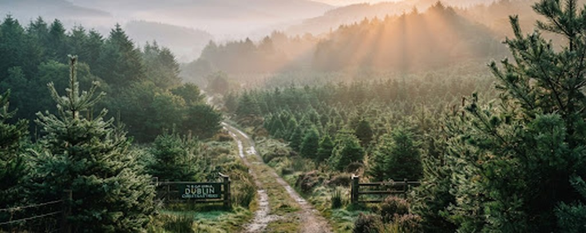
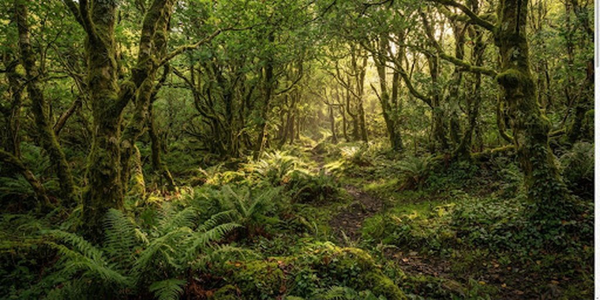

The gift that keeps on giving.
Buy a Christmas tree and help plant another native Irish tree. For every Christmas tree purchased, we'll plant a native Irish tree as part of our woodland restoration work, supporting a future home for native wildlife and biodiversity.

Kilmashogue Foothills & Glencullen Catchment. Permanent rewilding corridor active through 2035.
How the 1:1 Planting Model Operates
From the fresh needle scents in your Dublin living room to permanent, sheltered woodlands along the Dublin Mountain Way.
Choose your tree
Select your premium sustainably harvested Nordmann Fir or Fraser Fir delivered right to your door across Dublin with minimal emissions. Hand-cut at peak freshness to retain lush needles through Epiphany.
We plant a native one
Our forestry conservation team plants a young sapling of native Irish oak, hazel, birch, or rowan in our protected Wicklow-Dublin restoration reserve. Each seedling is mapped to an authenticated registry.
The woodland grows
Your Christmas holiday tree directly funds a permanent, protected native canopy with thriving biodiversity, insects, and woodland songbirds. A multi-generational legacy preserved for centuries.
Continuous Cover Forestry in Practice
Our woodland is a former non-native forest now undergoing careful selective thinning. This creates space and light for young native trees to establish, while the remaining mature trees provide them with shelter and soil stability as they grow.

Give a Gift That Keeps Growing
Dedicate a native sapling in the Dublin-Wicklow foothills in honour of someone dear. Each sponsorship funds planting, protective biodegradable sheltering, and perpetual maintenance within our protected continuous-cover woodland.
Personalised Parchment Certificate
Printed on recycled linen stock with official seal and precise GPS tree coordinates.
Annual Canopy Growth Reports
Receive photography and seasonal updates as the young woodland matures year on year.
Certificate of Sponsorship
This document certifies the dedicated planting and lifelong stewardship of a native Irish tree in the Dublin Mountains
Find Your Guardian Tree in the Circle of Life
Ancient Celtic tradition ties the lunar year to 13 sacred native trees, each bestowing distinct virtues, protection, and poetic vision upon those born under its boughs. Discover your tree guardian or dedicate one in honour of a cherished birth date.
The 13 trees at a glance
Swipe or use the arrows, then select a tree to read about it. Photo credits

Photo: Robert Flogaus-Faust, CC BY 4.0

Hazel · Coll
(The Wise Visionary)In Celtic lore, the hazel tree represents concentrated wisdom, intuition, and inspiration. Nine sacred hazel trees grew around the legendary Well of Segais, dropping nuts of poetic insight into the water. Hazel guardians are perceptive, articulate, and naturally curious truth-seekers dedicated to lifelong craft and renewal.
The 13 Sacred Celtic Lunar Trees
Birch (Beith)
Pioneer woodland coloniser symbolising purification and fresh hope.
Rowan (Luis)
The mountain ash guarding hearth and sparking inner artistic flame.
Ash (Nion)
Linking earth and sky with grand branches and steadfast resilience.
Alder (Fearn)
Thrives along riverbanks, granting unshakable fortitude in adversity.
Willow (Saille)
Harmonised with water cycles and dream insight; supple yet unbreakable.
Hawthorn (Huath)
Guardian of boundaries and Bealtaine blossoms in traditional Ireland.
Oak (Duir)
The noble king of the summer forest; provider of enduring wood and shelter.
Holly (Tinne)
Winter-evergreen foliage protecting wildlife with steadfast dignity.
Hazel (Coll)
Keeper of Segais waters; analytical brilliance, poetry and insight.
Vine (Muin)
Autumnal bounty, sensory balance, celebratory warmth, and camaraderie.
Ivy (Gort)
Tenacious climber weathering every frost with fierce personal bonds.
Reed (Ngetal)
Deep subterranean roots, musical storytelling, and penetrating clarity.
Elder (Ruis)
Tree of the winter solstice; honours deep rest, curative transformation, and the return of light.
* Celtic Tree Astrology is grounded in ancient Irish Ogham alphabet lore and lunar folklore. Every sapling sponsored through The Original Dublin Christmas Trees is planted and stewarded under Native Woodland Scheme standards in the Dublin Mountains.
Celebrate Christmas. Help nature take root.
Reserve your holiday tree or register your tree sponsorship early. Dublin residential deliveries commence the last week of November with scheduled zero-emission drop-offs.
Questions or corporate orders? Reach out directly to our forestry coordinator:
romacsweeney@gmail.comRegistration & Tree Reservation
Complete your details to secure your tree and native planting certification.